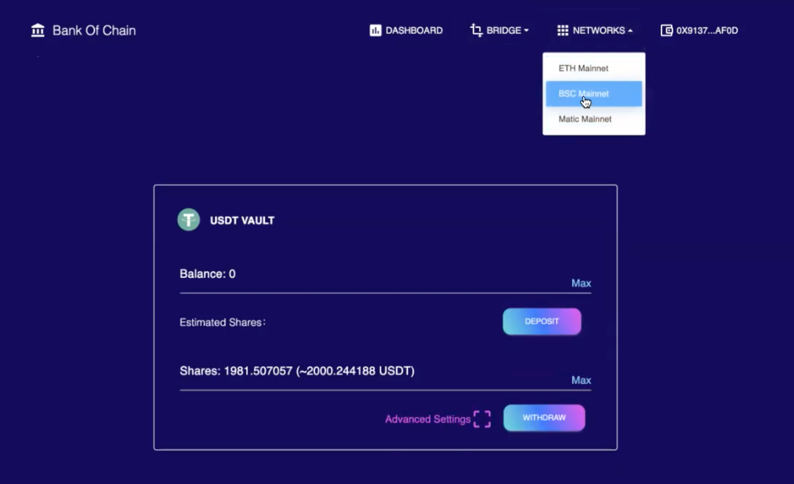
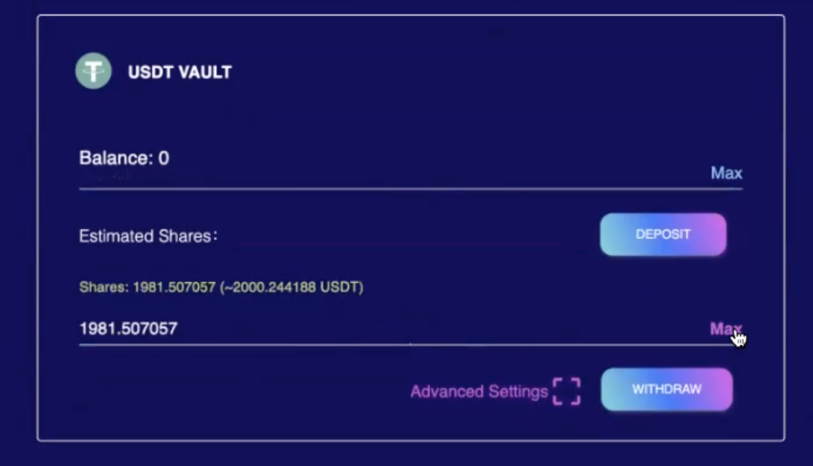
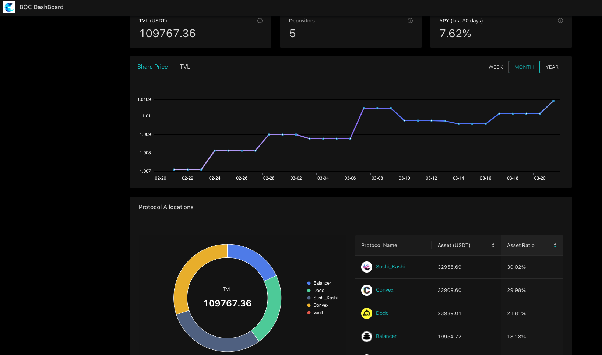

User Handbook
Wallet and the Connection with BOC
A wallet allows user to interact and perform investment transactions with BOC. The first step for user to connect a wallet is to enter the “CONNECT WALLET” button as seen on the front page of the BOC website.

Users can connect a wallet using the Metamask Browser extension, or via WalletConnect. User can also acquire corresponding USD-pegged crypto assets in the following ways:
- Minting USD-pegged crypto assets by depositing USD into the underlying Blockchain and receiving USD-pegged crypto assets in return. For instance the example of FUSD on Fantom.
- Using BOC Application to exchange supported USD stable coin assets, stable coin exchange uses 1Inch and Paraswap aggregators to reduce slippage.
- Purchasing stable coins on the decentralized exchanges directly: Paraswap & 1inch
Once the wallet are connected, the crypto asset values should automatically displayed as a connected wallet where LP can now begin to start the parameters setup as well as the yield farming process.

Parameters Setup (Blockchain Networks and Blockchain Bridges)
With a valid Wallet connection, the following parameters can be set: Blockchain Bridge Selection When users need to move crypto tokens from one blockchain to another, the blockchain bridge is the method to allow the transfer of assets. In BOC, user can select the related bridge type for their action needs.

Blockchain Main Chain Selection Users can select which main chain for the operation to focus on by selecting the chain from the related drop-down list.

Deposit and Withdrawal Overview
Deposit Asset - once the user has successfully connected the wallet with BOC, he/she may start the investment process by selecting the deposit amount into the intended vault. Choose the amount to deposit or select “Max” for full deposit.

Withdrawal
Withdraw Asset - once the user has successfully invested with the wallet by deposit on BOC, he/she may start the withdrawal process at any time by selecting the withdrawal amount from the intended vault. Choose the amount to withdrawal or select “Max” for full withdrawal from the selected vault.

How to understand investment earning
About the actual APY calculator, please refer to the APY section for the details. LP can see their immediate withdrawal amount or the estimated amount on the withdrawal screen.

Historical performance data can be found from the BOC Dashboard.
https://dashboard.bankofchain.io/#/

Understand dashboard: APY calculation
(Work in Progress / Pending for final Design Document)
Off-chain APY Calculation Sources of third party APY inquiry：
- vfat.tools
- coingecko
- zapper
- Official APY
- Apy.vision Fee
farming APY Calculation：https://github.com/farming-finance/farming-api/blob/f24dd6dcf59c1fe143ae34acf1e260379c5eed87/docs/apr-and-apy.md
SNX Pool: For a fixed period of time, a fixed number of tokens are allocated. Farming is the kind of SNX Pool with APY calculated on a weekly basis, 52 weeks a year
For currency pair pools with transaction fees, similar to uniswap and sushi, they borrow from the interface of apy.vision
For curve, there are CRV APY (the official website has a calculation method, and the display is consistent with the official website) and pool apy+lend apy (with an interface)
APR formula: the number of mining coins issued in one year * the price of mining coins in USD / the total share of LP corresponding to the mining pool / the USD price of LP
Mining token APY, due to the requirement of withdrawn and reinvested, the weekly APR is displayed, assuming that the user will claim FARM every week, and then reinvest, weklyCompound(APR) = (1 + (APR% / 52 / 100%)^52 - 1) * 100%
aave APY calculation official website description: https://docs.aave.com/developers/guides/apy-and-apr
Code Reference ：
Pickle APY reference： https://github.com/pickle-finance/pf-core/tree/main/src/behavior/impl
Farming APY reference： https://github.com/farming-finance/farming-api/tree/master/src/vaults/apys/implementations